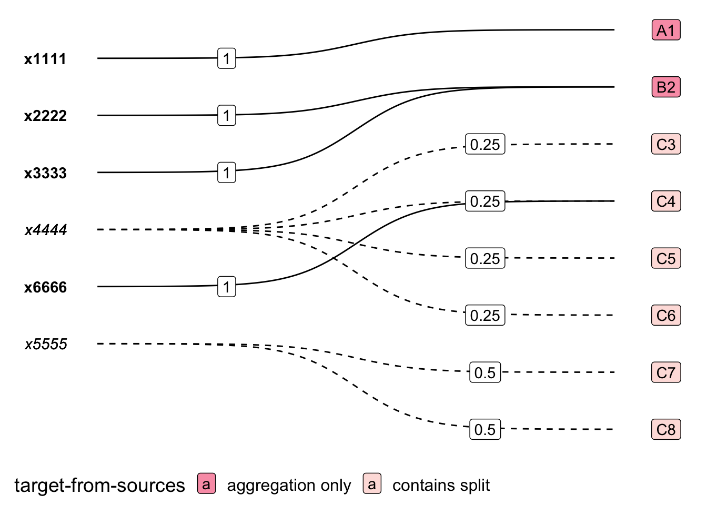

7 Workflows and Extensions
7.2 Multiple Transformations
7.2.1 Multi-Step Transformation (WIP)
Consider the task of transforming some data from classification A to C, and imagine you only have panel maps for the steps A-to-B and B-to-C. It is straightforward to chain these transformations together.
7.3 Visualising Panel Map Representations
See viz-panel-maps for more:
7.3.1 Panel Maps as Graphs
pm_BA |> plt_pm_sigmoid(std_A, std_B, weight) +
scale_fill_brewer(palette="RdPu", direction = -1)